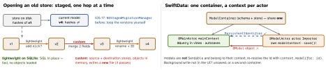

ios-platform · folio
In one line: On open, Core Data compares the store’s recorded entity version hashes
with the current model; if they differ it must migrate — lightweight
(mapping inferred, schema-shaped changes only) or custom (mapping model +
NSEntityMigrationPolicy code), one hop at a time. SwiftData (iOS 17) is a
macro layer on the same engine: @Model classes, a ModelContext per actor,
PersistentIdentifier across actors, VersionedSchema +
SchemaMigrationPlan for the same lightweight/custom stages.
Download PDF Print view LaTeX source


Core Data
.xcdatamodeldholds versions; the current one is ticked. Each entity/property has aversionHash; the store metadata keeps the set it was written with. Same schema, new meaning → bumpversionHashModifier.- Store description flags
shouldMigrateStoreAutomatically+shouldInferMappingModelAutomaticallyboth default true:NSPersistentContainermigrates lightweight insideloadPersistentStores, synchronously. - Custom: an
.xcmappingmodel($source.xexpressions) + anNSEntityMigrationPolicysubclass overriding
createDestinationInstances(forSource:in:manager:).NSMigrationManagerwrites a new store; swap it in on success. - Staged (iOS 17): an
NSStagedMigrationManagerofNSLightweightMigrationStage/NSCustomMigrationStage(will/didMigrateHandler); models as
NSManagedObjectModelReference; store option
NSPersistentStoreStagedMigrationManagerOptionKey.
| Lightweight can | Needs custom |
|---|---|
| add / remove attribute, entity | merge first+last → name |
| optional → required with default | split one entity into two |
| rename via Renaming ID | de-duplicate, fix bad data |
| to-one ↔ to-many, add relationship | type change needing logic |
Risks · testing
- Data loss: rename without Renaming ID (drop + add); required attribute without default (fails); “delete the store” — only for a re-downloadable cache.
- Big migration on main at launch → watchdog
0x8badf00d: load off main, show progress, back up first. - Use
destroyPersistentStore/replacePersistentStore, notFileManager— SQLite has-wal/-shmsidecars. - Tests: golden stores written by each old app version (with sidecars) → migrate a copy → assert counts + values; the whole chain. CloudKit-synced model: additive changes only.
Traps
- Passing a
@Modelto another actor — passpersistentModelID. .cascadewith no inverse declared → children may survive.(unverified)- Adding
.uniqueover duplicate rows fails the migration — dedupe in a.customstage’swillMigrate. - Lightweight “handles everything” — it never computes values.
SwiftData (iOS 17)
@Model final class: the macro addsPersistentModel+Observable, backing storage per property,persistentModelID.@Attribute(.unique),@Attribute(originalName:)(rename),.externalStorage,@Transient. iOS 18:#Unique,#Index..modelContainer(for:)injectsmainContext(@MainActor,autosaveEnabled) into the environment.@Query(filter:sort:)is SwiftUI-only and re-renders on change; for a runtime filter set_items = Query(filter: …)in the view’sinit. Elsewhere:context.fetch(FetchDescriptor)with#Predicate,fetchLimit,fetchCount;context.delete(model:where:)= batch delete.@ModelActorsynthesisesinit(modelContainer:),modelContext,modelExecutor. Background contexts: callsave()yourself.@Relationship(deleteRule: .cascade, inverse: \Item.folder); rules.nullify(default) ·.cascade·.deny·.noAction. To-many arrays come back unordered.
Example — dedupe, then make it unique
enum V1: VersionedSchema {
static let versionIdentifier = Schema.Version(1, 0, 0)
static var models: [any PersistentModel.Type] { [Trip.self] }
@Model final class Trip { var name = "" } }
enum V2: VersionedSchema { /* 2.0.0: @Attribute(.unique) */ }
enum Plan: SchemaMigrationPlan {
static var schemas: [any VersionedSchema.Type]
{ [V1.self, V2.self] }
static var stages: [MigrationStage] { [dedupe] }
static let dedupe = MigrationStage.custom(
fromVersion: V1.self, toVersion: V2.self,
willMigrate: { ctx in /* delete duplicate V1.Trips */
try ctx.save() }, didMigrate: nil) }
let c = try ModelContainer(for: V2.Trip.self,
migrationPlan: Plan.self)SwiftData vs Core Data
SwiftData: Swift-native, Observable, SwiftUI-first, iOS 17+. Core Data still for FRC-driven UIKit lists, batch insert/update, derived attributes, fine context control, older OS, complex migrations. Both can open one store (same schema; rename the NSManagedObject subclasses so class names don’t clash).
Remember
Hash → hop → verify on a golden store. Lightweight = inferred, custom = your code; across actors pass the id; a stale UI = no save(), or two containers.